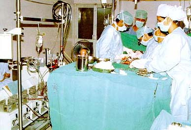
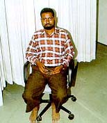
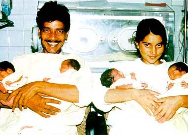
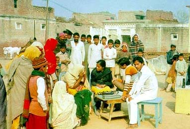
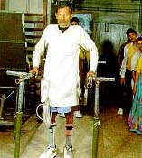
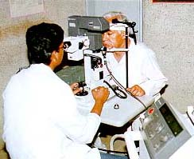

| AIIMS strives hard to make world class clinical care available to millions of underprivileged citizens of India and neighboring countries. While its magnificent buildings and hi-tech facilities may create a superficial image of elitism, its corridors are thronged by patients, most of them too poor to afford quality treatment elsewhere. They come here with high hopes because of the reputation which AIIMS as built up. It has over 1500 spread over the main hospital, Dr. Rajendra Prasad Centre for Ophthalmic sciences, Cardiothoracic Centre, Neurosciences Centre, Institute Rotary Centre Hospital and De-addiction Centre. This complex of facilities caters to about 1.5 million outpatients and 80,000 inpatients every year .The number of surgical operations performed at AIIMS last year was over 100,000. |  |
| Coronary bypass surgery in progress at Cardiothoracic Centre, AIIMS |
|  | However, the strength of AIIMS lies not in numbers, but in availability under one roof of the best team of medical and surgical experts, state-of-the-art equipment, and our capacity to rise to the occasion to meet diagnostic or public health challenges.Be it the autoanalyser or the linear accelerator,magnetic resonance imaging or the gamma knife, AIIMS has them all. Once something new arrives on the scene,someone, somewhere in the Institute takes the initiative and musters the energy and drive required to get it |
| Shri Devi Ram, the first heart transplant patient in India, operated on 3 August 1994 at AIIMS. |
| The role of AIIMS in patient care is not confined to our own hospital.AIIMS has trained physicians and surgeons who have fanned out across the country and abroad.For decades a large proportion of neurologists, neurosurgeons, cardiac surgeons, paediatric surgeons and gastroenterologists were from AIIMS,simply because we were the first to start courses in these superspecialities.New we have D M courses also in endocrinology and medical oncology.The nation has invested heavily in AIIMS from its doubt that AIIMS meager resources in an attempt to provide the best possible health care to its people irrespective of their paying capacity. Few would has fulfilled its commitment. |  |
| The hi-tech facilities and nursing care at AIIMS have contributed a lot to the survival of these quadruplets |
|  | Most of the health indices set as a goals for the country for the year 2000 have already been achieved in the ballabgarh block. The infant morality rate in CRHSP is 54.6 per 1000 live births per year against the national average is 74.There are no maternal deaths in this population against a national figure of 200-400 per 1,00,000 live births per year. Immunization coverage of children and pregnant women is over 95% as is the coverage for vitamin A, ORT use during diarrhea and early appropriate treatment of pneumonia in children. |
| An outdoor out patient clinic in a slum at the urbal extension service of Center for Community Medicine, AIIMS. |
| Extension activities of AIIMS include a model community-based urban health project and a De-addiction Centres. A patient undergoing treatment in the Department of Physical Medicine and Rehabilitation |  |
| Back on his feet. |
|  | Among the areas pioneered by AIIMS are cardiac catheterization,heart valve surgery, porto-caval surgery, neonatal surgery,jointreplacement, cochlear implant and multi organ transplants (cornea, kidney,bone marrow,heart and liver).Our results in sophisticated medical and surgical care are among the best in the world. The most satisfying aspect of this endeavour is that these cutting- edge modalities are being actually used for is that poor. |
| A patient undergoing laser treatment at Dr.Rajendra Prasad Centre for Ophthalmic Sciences,AIIMS. |